Setup edition
Last updated July 26th, 2023
The Setup edition supports the one-time configuration of enrolled device and wearable apps and settings. To change a device configuration after initial policies are set, devices must be factory reset and the new policies must be re-applied. The Setup edition includes a select subset of the policies and settings available in the Dynamic edition’s normal mode.
Introduction
To date, if a device is configured and its assigned profile is changed, a profile push update is made regardless of the profile’s edition (Setup or Dynamic). New rules are now in place to restrict Setup edition profiles from receiving a push update. A Dynamic profile can still push update another Dynamic edition profile, and a Setup edition profile can still push update a Dynamic edition profile. However, a Setup edition profile can no longer update another Setup edition profile, nor can a Dynamic edition profile push update a Setup edition profile.
When an IT administrator pushes an updated configuration, each device utilizing the updated profile receive the configuration update, whether intended or not. With this enhancement, an IT admin can selected individual devices for push updates from the portal’s PROFILES tab or at the time of profile modification. This helps administrators update just those specific devices intended to receive a specific update and exclude those devices that do not need to receive the updates.
This section will guide you through the Configuration tab when creating a profile.
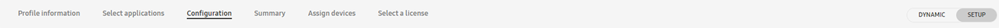
Note
For information on updating and replacing an existing wearable device profile, go to: Updating an existing device profile
Displays
The Displays tab allows you to select a custom watch face, set custom booting and shutdown animations when creating a profile. You can also clear previously set animations on this tab.
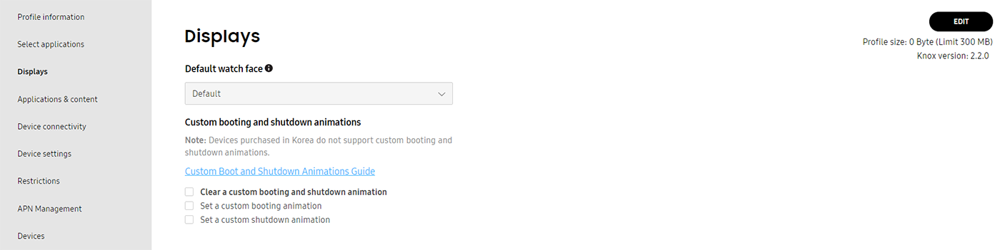
Read the WKC Animation Guide for instructions on how to create animation files. The EDJ file format is used exclusively for wearable device animation and is a unique file format compared to phones and tablet device animation files.
For instructions on setting a custom display, booting animation or shutdown animation:
Set a custom watch face
After uploading a watch face application, set the watch face to display:
-
Under Default watch face, select the watch face application.
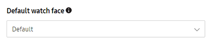
-
Click SAVE.
Set a custom booting animation
-
Under Custom booting and shutdown animations, select Set a custom booting animation.
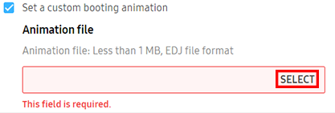
-
Click SELECT to upload an EDJ or WGT format animation file.
- Note that the file must be less than 1 MB.
-
Click SAVE.
Note
Devices purchased in Korea don’t support custom booting and shutdown animations.
Set a custom shutdown animation
-
Under Custom booting and shutdown animations, select Set a custom shutdown animation.
-
Click SELECT to upload an EDJ or WGT format animation file.
- Note that the file must be less than 1 MB.
-
Click SAVE.
Note
Devices purchased in Korea don’t support custom booting and shutdown animations.
Applications & content
The Applications & content tab allows you set application restrictions, remap hardware keys, and select files to save in the contents folder.
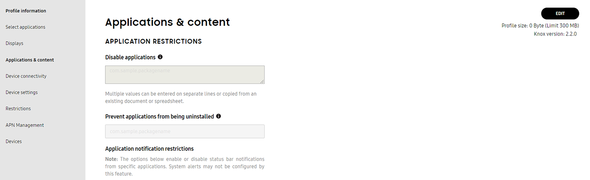
Set application restrictions
Disable app
Disable up to 5 applications for Setup edition:
-
Under APPLICATION RESTRICTIONS, go to the Disable applications section.
-
Enter the package name of the application you want to disable, or add a CSV file.
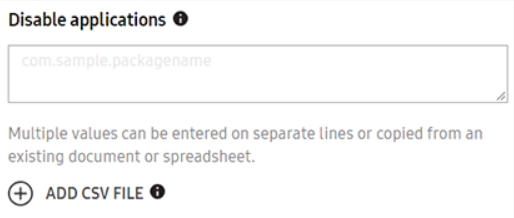
-
Click SAVE.
Note
Tizen apps, a package ID uses the identifier “org.tizen.message” or “org.tizen.call”. Ensure you enter the package ID, not the application ID.
Prevent an app from being uninstalled
Prevent 1 application from being uninstalled for Setup edition:
-
Under APPLICATION RESTRICTIONS, go to the Prevent applications from being uninstalled section.
-
Enter the package name of the target application.
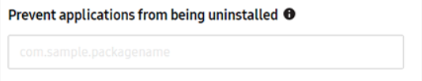
-
Click SAVE.
Note
Tizen apps, a package ID uses the identifier “org.tizen.message” or “org.tizen.call”. Ensure you enter the package ID, not the application ID.
Set app notification restrictions
This feature disables app notifications to prevent pop up notifications in the watch face UI. There’s two options when disabling notifications, which includes:
- Disable all apps.
- Disable all apps except specific allowed apps.
To set app notification restrictions:
-
Under APPLICATION RESTRICTIONS, go to the Notification restrictions section.
-
Enter the package name of the application you want to blocklist or allowlist .
- Notification blocklist — Enter the package names to prevent the applications’ notifications on the device.
- Notification allowlist — Enter the package names to allow applications’ notifications on the device.
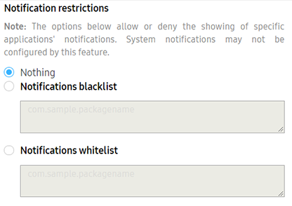
-
Click SAVE.
Note
Tizen apps, a package ID uses the identifier “org.tizen.message” or “org.tizen.call”. Ensure you enter the package ID, not the application ID.
Remap hardware keys
With Knox Configure supported wearable devices, the back and home keys can be mapped to applications invoked when those specific wearable hardware key are long or double pressed. Additionally, existing Back and Home key mappings can be cleared when they are no longer optimal for the wearable.
Under the REMAP HARDWARE KEYS, you can set actions for the Back key (long press), and Home key (double press). You can also clear any previously set apps to remap a hardware key.
If you haven’t done so, upload a new application to remap a hardware key using the applications tab.
Back key (long press) — Provide the Application ID for the wearable device’s back key functionality. This invokes an app when a wearable device’s Back key is long pressed.
- Clear Back key mapping - Select this option to remove the existing application mapping set for wearable device’s back key.
Home key (double press) — Provide the Package name and Application ID for the wearable device’s back key functionality. This invokes an app when a wearable device’s Home Key is double pressed
- Clear Back key mapping - Select this option to remove the existing application mapping set for wearable device’s back key.
Content
Set the device to save all downloaded content in the Contents folder by default:
-
Under CONTENT, go to Select files to save in the Contents folder.
-
Click SELECT.
- Selected files, such as video, music, or digital books are then uploaded to the device’s content folder upon pushing the profile.
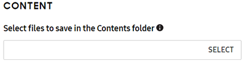
Device connectivity
The Device connectivity tab allows you set Wi-Fi settings, Bluetooth, location, airplane mode, mobile data, and data roaming.
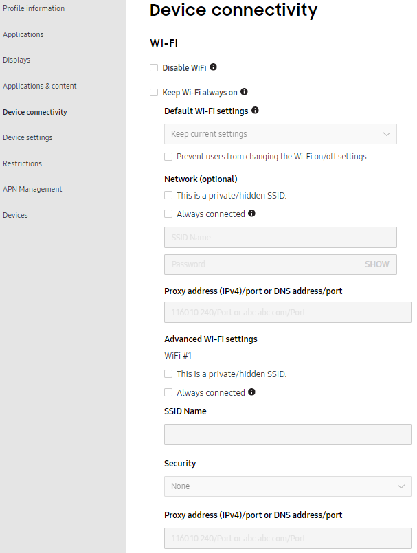
To customize device connectivity settings for Setup edition:
Set custom Wi-Fi settings
Silently turn on Wi-Fi and set the device to a preconfigured access point (AP) with a given network SSID and password if the AP is in range:
- Under WI-FI, set the following configurations:
- Disable Wi-Fi settings — Restricts devices from using Wi-Fi connectivity.
- Select Keep Wi-Fi always on to keep Wi-Fi continuously on, even when the wearable battery is low. Enabling this setting prevents the Wi-Fi from being turned off, and disables the Power saving and Airplane modes.
- Default Wi-Fi settings — Overrides the current Wi-Fi settings on the device. Select: Keep current settings, On or off.
- Prevent users from changing the Wi-Fi on/off settings — Prevents the device user from changing the Wi-Fi settings on the device. Maintains the Default Wi-Fi settings.
- Network — Enter the SSID name and Password to automatically connect to a Wi-Fi network.
- This is a private/hidden SSID — Select this option to keep the network SSID hidden, and not exposed on the list of available networks.
- Always connected — Select this option to connect the device automatically to a designated AP once configured.
- Proxy settings / Proxy port — Set the IPv4 or IPv6 proxy address and specify the proxy port used to for the wearable device’s Wi-Fi connection.
- Specify advanced Wi-Fi settings:
- This is a private/hidden SSID — Select this option to keep the network SSID hidden, and not exposed on the list of available networks.
- Always connected — Select this option to connect the device automatically to a designated AP once configured.
- SSID name — Enter the network name or Service Set Identifier (SSID).
- Security — Select the security type for the Wi-Fi connection .
- Proxy settings / Proxy port — Set the IPv4 or IPv6 proxy address and specify the proxy port to use for the wearable device’s Wi-Fi connection.
- Click SAVE.
Set custom Bluetooth settings
- Under BLUETOOTH, go to Default Bluetooth settings.
- This sets the device to the specified Bluetooth settings.
- To specify the Bluetooth settings on the device, select one of the following:
- Keep current settings — No change in the Bluetooth settings for the device, retains the last known settings for the device.
- On — Enforces the Bluetooth state to remain ON. Overides the current Bluetooth settings on the device.
- Off — Enforces the Bluetooth state to remain OFF. Overides the current Bluetooth settings on the device.
- Click SAVE.
Set custom GPS location settings
- Under LOCATION, go to Default GPS settings.
- This sets the device to the specified GPS settings.
- To specify the GPS settings on the device, select one of the following:
- Keep current settings — No change in the GPS settings for the device, retains the last known settings for the device.
- On — Enforces the GPS state to remain ON. Overides the current GPS settings on the device.
- Off — Enforces the GPS state to remain OFF. Overides the current GPS settings on the device.
- Click SAVE.
Set custom Airplane mode settings
- Under AIRPLANE MODE, go to Default Airplane mode settings.
- This sets the device to the specified Airplane mode settings.
- To specify the Airplane mode settings on the device, select one of the following:
- Keep current settings — No change in the Airplane mode settings for the device, retains the last known settings for the device.
- On — Enforces the Airplane mode state to remain ON. Overides the current Airplane mode settings on the device.
- Off — Enforces the Airplane mode state to remain OFF. Overides the current Airplane mode settings on the device.
- Click SAVE.
Note
Setting the Airplane mode to On will disable Mobile data settings.
Set custom mobile data settings
- Under MOBILE DATA, go to Default mobile data settings.
- This sets the device to the specified mobile data settings.
- To specify the mobile data settings on the device, select one of the following:
- Keep current settings — No change in the mobile data settings for the device, retains the last known settings for the device.
- On — Enforces the mobile data state to remain ON. Overides the current mobile data settings on the device.
- Off — Enforces the mobile data state to remain OFF. Overides the current mobile data settings on the device.
- Click SAVE.
Note
Mobile data can’t be enabled when airplane mode is enabled.
Set custom data roaming settings
- Under DATA ROAMING, go to Default data roaming settings.
- This sets the device to the specified data roaming settings.
- To specify the data roaming settings on the device, select one of the following:
- Keep current settings — No change in the data roaming settings for the device, retains the last known settings for the device.
- On — Enforces the data roaming state to remain ON. Overides the current data roaming settings on the device.
- Off — Enforces the data roaming state to remain OFF. Overides the current data roaming settings on the device.
- Click SAVE.
Device settings
Under Device settings tab, you can hide settings elements and turn USB debugging mode ON or OFF.
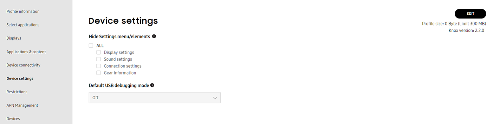
Hide Settings menu/elements
Set which menu options or elements are hidden in the device’s Settings UI.
- ALL — Hide all wearable device options.
- Display settings — Hide the wearable device’s display options.
- Sound settings — Hide the wearable device’s sound options.
- Connection settings — Hide the wearable device’s connection options.
- Gear information — Hide the wearable device’s gear information options.
Default USB debugging mode
The default setting for USB debugging is OFF, but you can set this as ON using the drop down menu.
Restrictions
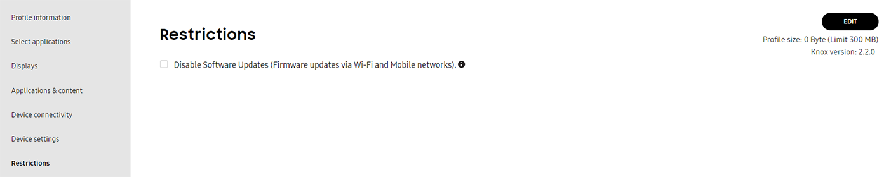
Note
Knox wearable devices can map their hardware keys to specific application functions. For more information, go to Remap hardware keys (wearables only).
- Disable Software Updates (Firmware updates via Wi-Fi and Mobile networks) — Prevent the device from displaying software update notifications. Even if users have enabled automatic updates, these update packages won’t be downloaded to the device.
APN Management
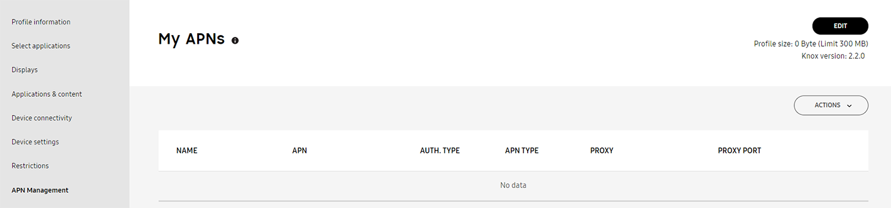
An Access Point Name (APN) is the gateway between a carrier providing 2G, 3G, or 4G mobile network service and the wearable device. Devices must be configured with the correct APN information to establish data connectivity. APN support is not available for wearable devices utilizing a setup edition Knox Configure profile, and only supported for wearable devices utilizing a dynamic edition profile.
General
If adding or editing an APN resource, provide the following configuration details:
Set as preferred APN — Disabled by default, set a preferred AP resource.
- APN Name — Assign a name to the specified access point network.
- APN (Access Point Name) Provide a name for the APN utilized access point hardware resource.
- Authentication type — Select an authentication scheme to validate user credentials. Options are None, PAP or CHAP.
- APN Protocol — Set the device to use IPv4 or IPv6 formatted network address as its APN connection medium.
- APN roaming Protocol — Set the device to use an IPv4 or IPv6 formatted network address as its roaming protocol.
Summary
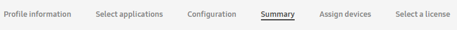
Review the settings configured for each category. Optionally select the General info and Additional EULA tabs to review the information entered. If you want to make any changes, click Back. Once you have verified the settings are correct, click Submit. Select Back to top to navigate back to the top of that respective screen.
Tutorial Progress
You’ve completed 3/4 steps! Go to the next step.
Is this page helpful?